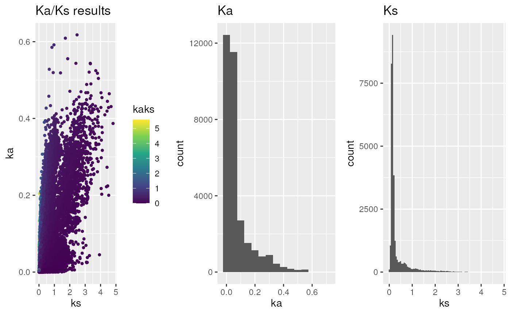
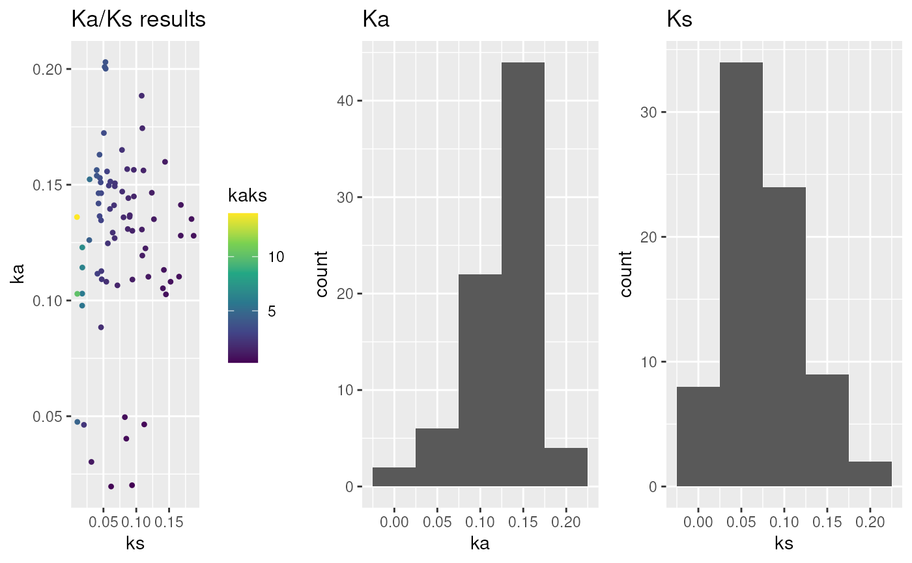

This function plots Ka/Ks results obtained via `rbh2kaks()` function or `MSA2dist::dnastring2kaks()` function.
Usage
plot_kaks(
kaks,
dag = NULL,
gene.position.cds1 = NULL,
gene.position.cds2 = NULL,
tandem.dups.cds1 = NULL,
tandem.dups.cds2 = NULL,
PlotTitle = "Ka/Ks results",
PlotType = "h",
binw = 0.05,
splitByChr = FALSE,
colorBy = "none",
ka.max = 5,
ks.max = 5,
ka.min = 0,
ks.min = 0,
select.chr = NULL,
doPlot = TRUE
)Arguments
- kaks
specify Ka/Ks input obtained via `rbh2kaks()` [mandatory]
- dag
specify DAGchainer results as obtained via `rbh2dagchainer()` [default: NULL]
- gene.position.cds1
specify gene position for cds1 sequences (see
cds2genepos) [default: NULL]- gene.position.cds2
specify gene position for cds2 sequences (see
cds2genepos) [default: NULL]- tandem.dups.cds1
specify tandem duplicates for cds1 sequences (see
tandemdups) [default: NULL]- tandem.dups.cds2
specify tandem duplicates for cds2 sequences (see
tandemdups) [default: NULL]- PlotTitle
specify Plot title [default: Ka/Ks results]
- PlotType
specify Plot type: "h" histogram or "d" dotplot [default: h]
- binw
specify binwidth (see
geom_histogram) [default: 0.05]- splitByChr
specify if plot should be split by chromosome [default: FALSE]
- colorBy
specify if Ka/Ks gene pairs should be colored by "rbh_class", "dagchainer", "tandemdups" or "none" [default: rbh_class]
- ka.max
specify max Ka to be filtered [default: 5]
- ks.max
specify max Ks to be filtered [default: 5]
- ka.min
specify min Ka to be filtered [default: 0]
- ks.min
specify min Ks to be filtered [default: 0]
- select.chr
filter results for chromosome names [default: NULL]
- doPlot
specify plot [default: TRUE]
Examples
## load example sequence data
data("ath_aly_ncbi_kaks", package="CRBHits")
## plot Ka/Ks values - default
g <- plot_kaks(ath_aly_ncbi_kaks)

## Calculate Ka/Ks values based on MSA
data("hiv", package="MSA2dist")
hiv_kaks <- MSA2dist::dnastring2kaks(hiv)
#> Joining with `by = join_by(seq1, seq2)`
#> Joining with `by = join_by(seq1, seq2)`
#> Joining with `by = join_by(seq1, seq2)`
g <- plot_kaks(hiv_kaks)
